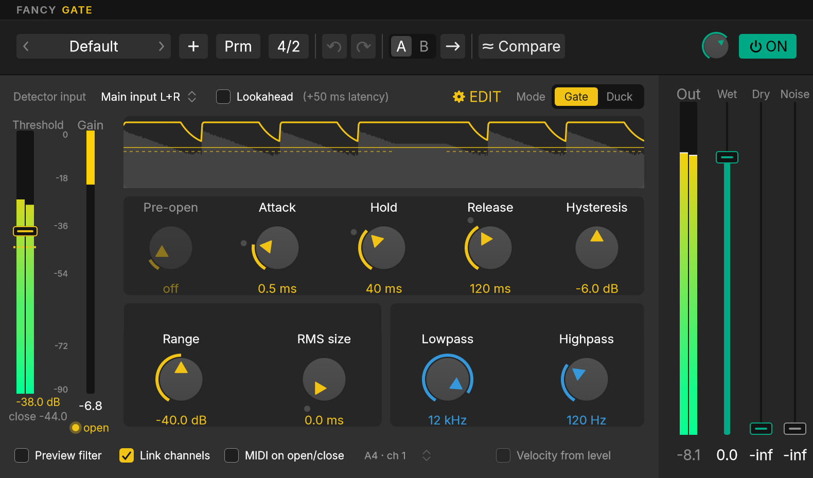
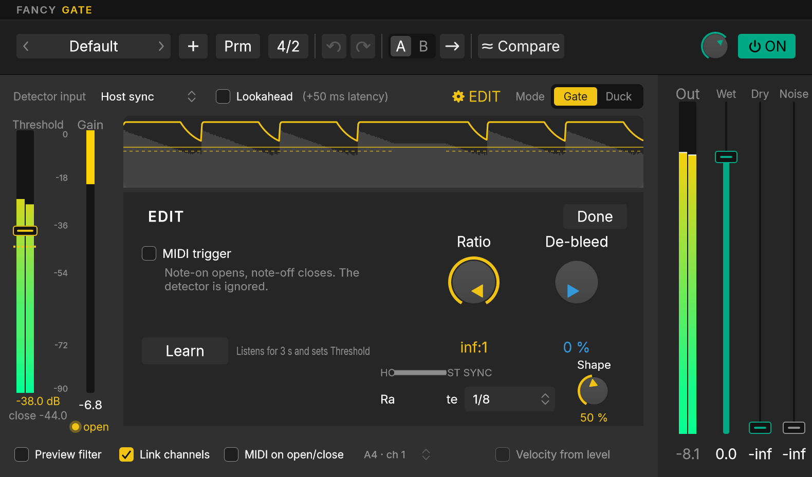

docs/gate.md, Phase 4 Wave 2: Upward mode, Decisions 1 to 3 A. New things in dashed yellow, on the plugin's real screenshot (1x coordinates).
1 · The main window in Upward
Mode gains a third choice, Upward, at the switch's full size. To fit it, the window grows 50 px wider, to 790 × 465 with item 11's title row (its minimum too): the graph, the knob cards and the footer widen, and every control keeps its size. While Upward is chosen, Range's knob becomes Boost (0 to 12 dB, 4 dB by default), the most it lifts, and Hysteresis dims.

⚙ EDIT
Mode
Detector
The graph's yellow line is the gain as now, rising above the top while it boosts. The lights read "boost" for "open". In Gate and Duck the knob is Range again and everything is as today, to the bit.
2 · The EDIT drawer in Upward
Ratio's knob becomes Up ratio (1.1:1 to 4:1, 1.5:1 by default) while Upward is chosen, as Range becomes Boost, so Gate's Ratio keeps its own value. Ceiling (Off, or −12 to 0 dBTP; Off by default) goes under Learn in every mode, since it can catch any peak, but Upward is what needs it.

⚙ EDIT
Mode
Main input L+R
De-bleed needs Lowpass and Highpass set: out-of-band thumps can't open the gate.
Ceiling−1.0 dBTP
Ceiling Off isn't in the path and adds no latency. On, it reports its latency and the dry path follows. Here the Detector input is Main input L+R, so the De-bleed note is back where Host sync's group was.